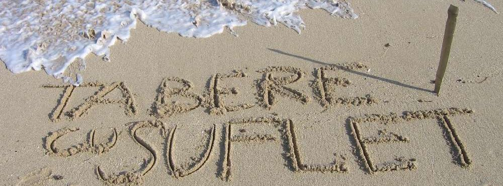
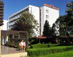
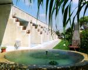
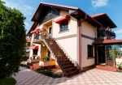

Hotel Delta 3* din Jupiter este situat la numai 50 de metri de plaja. Are o multime de facilitati pentru copii: Piscina Copiilor, Plaja Copiilor, Casa cu Povesti etc

Pensiunea Sun House din 2 Mai are 9 camere, fiecare cu pat dublu si extra-bed. Fiecare camera are grup sanitar si terasa proprie. Pensiunea are gradina cu gazon si trandafiri, terasa mare cu fantana arteziana, gratar de gradina, un foisor umbrit, club la subsol pentru tenis de masa, piscina pentru copii etc.

La Casa Rozelor din 2 Mai avem intotdeauna parte de multa caldura si ne simtim ca "acasa"! Fiecare camera are grup sanitar iar pensiunea are o terasa mare, unde vom manca, precum si o gradina minunata, cu multi trandafiri.